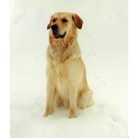

Породы собак
По афавиту
А
Б
В
Г
Д
Ж
З
И
Й
К
Л
М
Н
О
П
Р
С
Т
У
Ф
Х
Ц
Ч
Ш
Э
Ю
Я

Золотистый ретривер
Породы собак
Клички собак
Содержание и уход
Дрессировка собак
Болезни собак
Выставки
Флеш игры
Фотогалерея